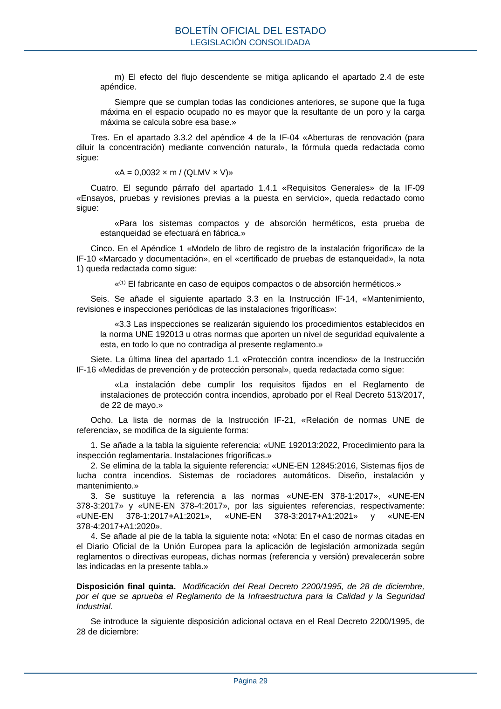

RSCIEI · edición 2025-04-10 · capa asociada
Documento RSCIEI-asociada · SHA-256 del PDF 85aa0af25d51e5b58d8975a4eefbf76d3f57a8933445cfe814ae9c4818a2e3e7
Copia fiel del PDF fuente · Fuente oficial
Ficha de la disposición en la fuente oficial
Texto extraído y reorganizado: Basado en datos de la Agencia Estatal Boletín Oficial del Estado. PDF reproducido: Fuente de los datos: Agencia Estatal Boletín Oficial del Estado.
Formatos: JSON del segmento · Markdown
apéndice. Siempre que se cumplan todas las condiciones anteriores, se supone que la fuga máxima en el espacio ocupado no es mayor que la resultante de un poro y la carga máxima se calcula sobre esa base.» Tres. En el apartado 3.3.2 del apéndice 4 de la IF-04 «Aberturas de renovación (para diluir la concentración) mediante convención natural», la fórmula queda redactada como sigue: «A = 0,0032 × m / (QLMV × V)» Cuatro. El segundo párrafo del apartado 1.4.1 «Requisitos Generales» de la IF-09 «Ensayos, pruebas y revisiones previas a la puesta en servicio», queda redactado como sigue: «Para los sistemas compactos y de absorción herméticos, esta prueba de estanqueidad se efectuará en fábrica.» Cinco. En el Apéndice 1 «Modelo de libro de registro de la instalación frigorífica» de la IF-10 «Marcado y documentación», en el «certificado de pruebas de estanqueidad», la nota 1) queda redactada como sigue: «⁽¹⁾ El fabricante en caso de equipos compactos o de absorción herméticos.» Seis. Se añade el siguiente apartado 3.3 en la Instrucción IF-14, «Mantenimiento, revisiones e inspecciones periódicas de las instalaciones frigoríficas»: «3.3 Las inspecciones se realizarán siguiendo los procedimientos establecidos en la norma UNE 192013 u otras normas que aporten un nivel de seguridad equivalente a esta, en todo lo que no contradiga al presente reglamento.» Siete. La última línea del apartado 1.1 «Protección contra incendios» de la Instrucción IF-16 «Medidas de prevención y de protección personal», queda redactada como sigue: «La instalación debe cumplir los requisitos fijados en el Reglamento de instalaciones de protección contra incendios, aprobado por el Real Decreto 513/2017, de 22 de mayo.» Ocho. La lista de normas de la Instrucción IF-21, «Relación de normas UNE de referencia», se modifica de la siguiente forma: 1. Se añade a la tabla la siguiente referencia: «UNE 192013:2022, Procedimiento para la inspección reglamentaria. Instalaciones frigoríficas.» 2. Se elimina de la tabla la siguiente referencia: «UNE-EN 12845:2016, Sistemas fijos de lucha contra incendios. Sistemas de rociadores automáticos. Diseño, instalación y mantenimiento.» 3. Se sustituye la referencia a las normas «UNE-EN 378-1:2017», «UNE-EN 378-3:2017» y «UNE-EN 378-4:2017», por las siguientes referencias, respectivamente: «UNE-EN 378-1:2017+A1:2021», «UNE-EN 378-3:2017+A1:2021» y «UNE-EN 378-4:2017+A1:2020». 4. Se añade al pie de la tabla la siguiente nota: «Nota: En el caso de normas citadas en el Diario Oficial de la Unión Europea para la aplicación de legislación armonizada según reglamentos o directivas europeas, dichas normas (referencia y versión) prevalecerán sobre las indicadas en la presente tabla.»
